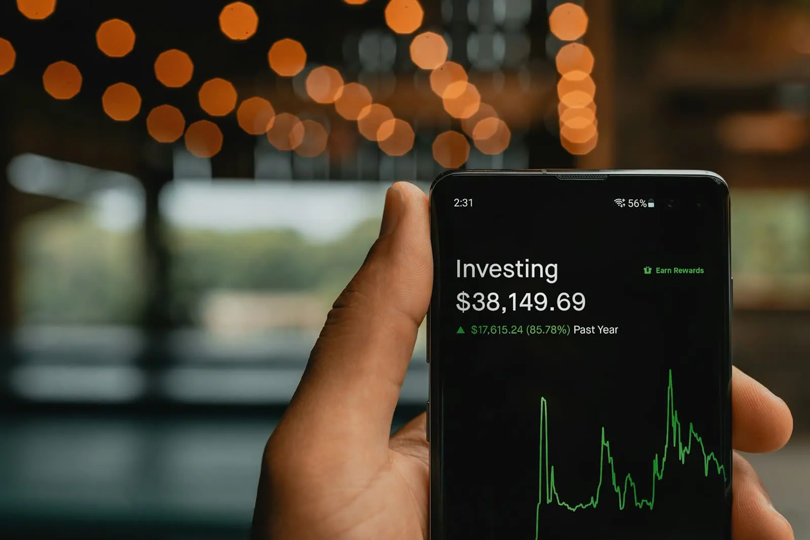
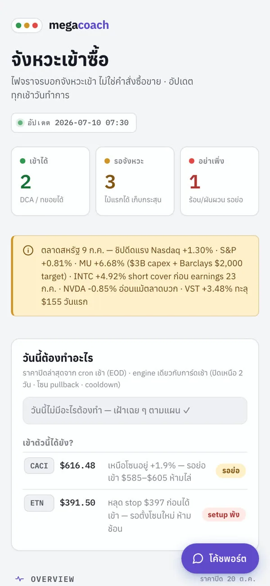
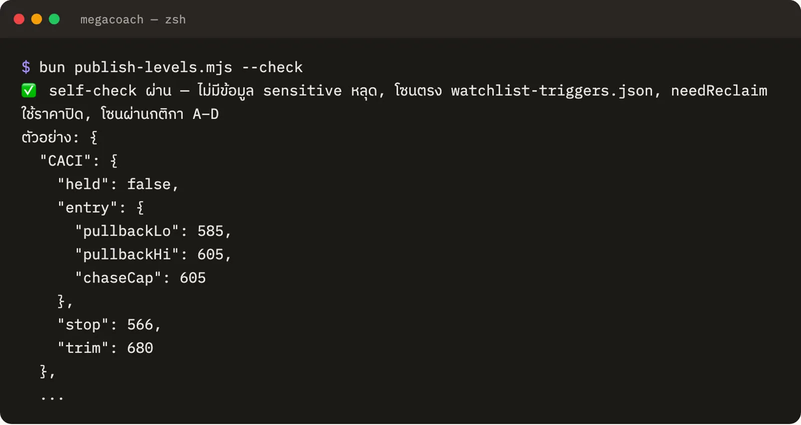
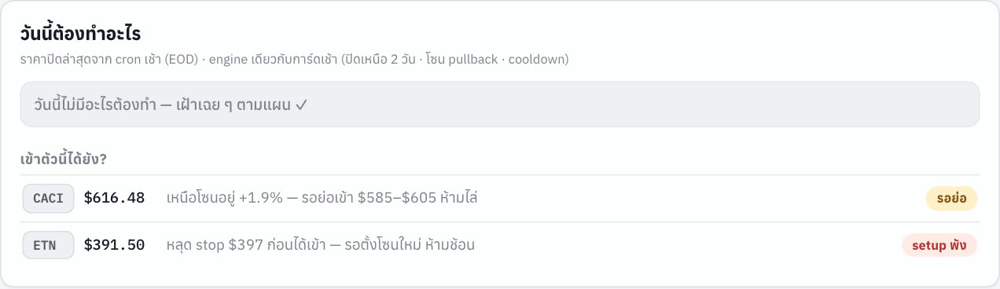

MegaCoach — an AI coach for my stock portfolio
A personal AI coach that manages a US stock portfolio on Dime. It puts a dashboard, an advisor that knows the real portfolio, and automatic entry/exit alerts into one LINE chat, while money figures are encrypted on the device before going to the cloud, which sees only ciphertext.

A personal system that works as a portfolio coach. It puts a dashboard, an AI advisor that knows the actual portfolio, and automatic DCA / stop / RMF reminders into one LINE chat. Money figures are encrypted on my own machine before they go to the cloud, so the server only ever sees ciphertext.
The problem
Why is managing a US stock portfolio on your own more tiring and error-prone than it sounds?

The portfolio data was scattered: holdings in one place, the watchlist in another, long-term goals only in my head. With nothing to remind me, I would forget DCA, forget the stop, and slip into chasing hot stocks on impulse. I wanted an advisor that actually knows my portfolio and that I can check on my phone. But money figures are very personal, and I did not want any cloud service to see them.
Portfolio data is scattered
Holdings, watchlist, RMF funds, retirement goal: each lives somewhere else, and nothing shows the whole portfolio on one screen.
Emotion drives FOMO buys
A hot stock makes a new high and I want to jump in. Entering without a plan or a stop I am willing to be wrong at puts the portfolio at more risk of ruin than profit.
Forgetting DCA, forgetting stops
Discipline slips as soon as nobody reminds you. A month goes by without topping up, a price breaks the stop-loss unnoticed, and near year end I remember the RMF target is not yet met.
Generic chatbots answer vaguely
You can ask an AI about stocks, but it does not know what you hold, your budget or your risk tolerance. The advice ends up as a generic formula that does not fit the real portfolio.
Money figures are highly sensitive
I wanted a dashboard on my phone, a link I could open anywhere. But deploying it to the cloud as-is means the real portfolio value sits on someone else's server.
The solution
Let the system do all the boring work (collecting data, watching the market, timing reminders) while money figures never leave the machine in readable form.


Everything in one LIFF dashboard
Open it from LINE and see the entry signal, the North Star gauge, RMF status and the monthly DCA plan on one phone screen.
An AI coach that knows the real portfolio
Before every answer it injects the portfolio context and the Fear of Ruin > FOMO philosophy into the system prompt, then uses web search for live data. Answers follow the real budget and risk, not empty cheerleading.
Automatic alerts in LINE every morning
Monthly DCA, RMF funds worth switching, prices breaking a stop or hitting a take-profit target. Each arrives as a Flex card where the header colour signals urgency (normal / opportunity / urgent).
Zero-knowledge: encrypted on the device
Real figures are encrypted with AES-256-GCM in the browser or on the machine before sending. The cloud, relay and git only see ciphertext, which only someone with the passphrase can decrypt.
The Mac is the single source of truth
My own machine pulls live prices, calculates value, encrypts it, publishes sanitized price zones and runs git push itself. The key never leaves the machine.
How it works: 4 steps
From live market prices to an alert card in LINE, running automatically every day with launchd.

Pull live prices
The Mac pulls stock and FX prices (Yahoo) plus fund returns (Finnomena), no API keys needed
Calculate and encrypt
Compute portfolio value and requiredCAGR, encrypt with AES-256-GCM, publish the sanitized zones
push → deploy
git push triggers a Vercel deploy · the LIFF dashboard and serverless routines read the new data
Alert / view
LINE sends a Flex card when a condition is met · opening the dashboard decrypts on the device with the passphrase
Tech Stack & Architecture
Two clear sides: the Mac (source of truth and key holder) and the cloud (display and alerts), connected only by ciphertext.
LINE + LIFF: an app I already open every day, nothing new to install · Vercel Serverless: the webhook, coach and relay are small stateless functions, no server to maintain · Web Crypto (AES-256-GCM + PBKDF2 250k): the same code encrypts in Node/Bun and in the browser, which makes zero-knowledge real · Mac + launchd acts as the source of truth that holds the key, so the cloud never sees money figures
What I built: 8 core capabilities
The full loop, from collecting portfolio data to sending alerts safely.

AI Portfolio Coach
Injects the portfolio and North Star context into the system prompt before answering, with web search for live data · looks at the whole portfolio, not a single stock
Morning Brief Engine
Builds Flex cards by "mood" (calm / warn / urgent): the header colour and warning strip signal how urgent the action is
North Star Gauge
A long-term goal gauge and pace tracker · computes requiredCAGR live from the current value with a bisection solver
Zero-Knowledge Layer
AES-256-GCM + PBKDF2 250k · the same code encrypts and decrypts on the machine and in the browser · unlocked with a passphrase
LINE Form + ZK Relay
Type a keyword, get a bubble, open the LIFF form, encrypt in the browser, send to the KV relay, and the Mac pulls and decrypts it · the relay accepts ciphertext only
Watchlist Triggers
Pulls live prices (no keys) and compares them with entry / stop / trim zones · alerts only when a zone is touched, with a per-ticker cooldown against spam
RMF Switch Advisor
Pulls 1/3/5-year returns from Finnomena and gives a verdict (switch / consider / fine), plus a reminder to reach the tax-deduction target before year end
Sanitized Publish Pipeline
Publishes only price zones and a held flag for the cloud to read · a regex self-check blocks sensitive data (share counts, money) from leaking
What it looks like: alert cards in LINE
Every morning the system sums up what to do as Flex cards. The header colour tells you at a glance how urgent it is.
Hacks and problems
6 engineering problems I had to solve myself: security, platform quirks and reliability.

A dashboard on the cloud, without the cloud seeing money
A static deploy on Vercel means anyone with the link can see it. Embedding real figures in a file would leak the portfolio value immediately.
AES-256-GCM + PBKDF2 250k on the machine first and push only ciphertext · the dashboard decrypts client-side with Web Crypto once the user enters the passphrase. The cloud only holds an unreadable blob.LINE webhook signature verification failed
x-line-signature must be verified against the raw body, but Vercel parses the body into an object first. The computed HMAC did not match, so real requests were rejected.
bodyParser: false) and read the raw stream directly, compute HMAC-SHA256 on the exact raw bytes, then JSON.parse. The signature matches, and forged webhooks are actually blocked.Figures must be fresh daily, but the key must stay on the machine
If the cloud calculates the value, the key has to go to the cloud (breaking zero-knowledge). If nothing updates, the numbers go stale.
launchd wakes a Bun script every morning to pull prices, calculate, encrypt and git push · the key is read from the macOS Keychain and never goes to the cloud · git push becomes the deploy pipeline.Cloud routines need "price zones" but not "shares or money"
The cloud routine has to compare live prices with entry/stop levels to send alerts, but that data was mixed in with share counts and real values.
publish-levels, which extracts only ticker, zones and a held flag into public JSON · --check runs a regex that blocks words like share/cash/value/baht from leaking. If it finds one, the build fails.Repeated daily alerts get annoying
A price can sit below the stop for days. Alerting every day means people stop reading · and the Mac and the cloud might alert about the same thing twice.
ticker:kind (alert once, then stay quiet for N days) plus a clear split of duties. The Mac sends only safety-critical stop/trim alerts, the cloud handles entry nudges. No duplicates, no alert fatigue.Price fetches failed right after the Mac woke from sleep
launchd starts the job just as the Mac wakes up. Sometimes Wi-Fi is not back yet, so the first price fetches fail and the whole run breaks.
Deliberate design decisions
What I chose not to build, so the tool stays safe and trustworthy.

This tool is a coach, not a trading bot. It alerts and analyses, but never places orders. Every card ends with "Analysis only, not a buy or sell order", and the final decision always belongs to a person · every money figure is encrypted on the machine before it leaves. Setting clear limits from the start kept the system small, straightforward and trustworthy.
Alert, never place orders
A person makes the decision; the system only prepares the data
Only ciphertext reaches the cloud
The relay and git see only a blob · the key stays on the machine
Fear of Ruin > FOMO
A survive-first philosophy, built into the coach's system prompt
Sanitized zones only
The cloud knows price zones, not share counts or money
Knowledge domains that got stronger
5 areas where my level genuinely moved up through this project.

Used Web Crypto for real: PBKDF2 to derive a key from a passphrase, AES-256-GCM to encrypt and decrypt, handling salt/iv/base64 myself, then designed the flow so the key never leaves the machine (the relay only receives ciphertext). Lesson: zero-knowledge is not magic. It is about putting "who holds the key" in the right place.
Connected the LINE Messaging API (reply/broadcast), embedded a LIFF webview, verified webhook signatures on the raw body, designed Flex bubbles that change colour by state, and learned the quirks of serverless (body parsing, cold starts, statelessness). Lesson: real platform integration means reading the spec and handling the runtime's edge cases.
Designed a "one machine holds the truth" architecture: launchd orchestrates several chained Bun scripts (pull → update → publish → seed), git push acts as deploy, and every step is best-effort (the job does not fail whether or not the network is ready). Lesson: good automation plans for the day when nothing is ready.
Wrote a system prompt that embeds an investing philosophy (Fear of Ruin, core vs satellite), injected portfolio context dynamically before each question, enabled the web_search tool for live data, and post-processed answers (stripping citations and artifacts). Lesson: an AI assistant's quality depends more on how you direct its context and limits than on the model itself.
Wrote a bisection solver for requiredCAGR from the current value plus monthly contributions, modelled the RMF tax cap and a fund-switch verdict from real returns, and separated core logic (long-term holds) from satellite (short-term trades with TA). Lesson: domain knowledge (finance) is the heart of it. The code just makes the rules run automatically and consistently.